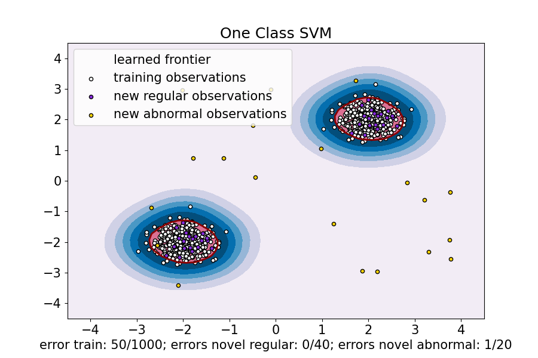

Note
Go to the end to download the full example code or to run this example in your browser via Binder
One-Class SVM versus One-Class SVM using Stochastic Gradient Descent¶
This example shows how to approximate the solution of
sklearn.svm.OneClassSVM in the case of an RBF kernel with
sklearn.linear_model.SGDOneClassSVM, a Stochastic Gradient Descent
(SGD) version of the One-Class SVM. A kernel approximation is first used in
order to apply sklearn.linear_model.SGDOneClassSVM which implements a
linear One-Class SVM using SGD.
Note that sklearn.linear_model.SGDOneClassSVM scales linearly with
the number of samples whereas the complexity of a kernelized
sklearn.svm.OneClassSVM is at best quadratic with respect to the
number of samples. It is not the purpose of this example to illustrate the
benefits of such an approximation in terms of computation time but rather to
show that we obtain similar results on a toy dataset.
- 
/root/scikit-learn-1.3.2/examples/linear_model/plot_sgdocsvm_vs_ocsvm.py:99: MatplotlibDeprecationWarning:
The collections attribute was deprecated in Matplotlib 3.8 and will be removed two minor releases later.
/root/scikit-learn-1.3.2/examples/linear_model/plot_sgdocsvm_vs_ocsvm.py:135: MatplotlibDeprecationWarning:
The collections attribute was deprecated in Matplotlib 3.8 and will be removed two minor releases later.
import matplotlib
import matplotlib.pyplot as plt
import numpy as np
from sklearn.kernel_approximation import Nystroem
from sklearn.linear_model import SGDOneClassSVM
from sklearn.pipeline import make_pipeline
from sklearn.svm import OneClassSVM
font = {"weight": "normal", "size": 15}
matplotlib.rc("font", **font)
random_state = 42
rng = np.random.RandomState(random_state)
# Generate train data
X = 0.3 * rng.randn(500, 2)
X_train = np.r_[X + 2, X - 2]
# Generate some regular novel observations
X = 0.3 * rng.randn(20, 2)
X_test = np.r_[X + 2, X - 2]
# Generate some abnormal novel observations
X_outliers = rng.uniform(low=-4, high=4, size=(20, 2))
xx, yy = np.meshgrid(np.linspace(-4.5, 4.5, 50), np.linspace(-4.5, 4.5, 50))
# OCSVM hyperparameters
nu = 0.05
gamma = 2.0
# Fit the One-Class SVM
clf = OneClassSVM(gamma=gamma, kernel="rbf", nu=nu)
clf.fit(X_train)
y_pred_train = clf.predict(X_train)
y_pred_test = clf.predict(X_test)
y_pred_outliers = clf.predict(X_outliers)
n_error_train = y_pred_train[y_pred_train == -1].size
n_error_test = y_pred_test[y_pred_test == -1].size
n_error_outliers = y_pred_outliers[y_pred_outliers == 1].size
Z = clf.decision_function(np.c_[xx.ravel(), yy.ravel()])
Z = Z.reshape(xx.shape)
# Fit the One-Class SVM using a kernel approximation and SGD
transform = Nystroem(gamma=gamma, random_state=random_state)
clf_sgd = SGDOneClassSVM(
nu=nu, shuffle=True, fit_intercept=True, random_state=random_state, tol=1e-4
)
pipe_sgd = make_pipeline(transform, clf_sgd)
pipe_sgd.fit(X_train)
y_pred_train_sgd = pipe_sgd.predict(X_train)
y_pred_test_sgd = pipe_sgd.predict(X_test)
y_pred_outliers_sgd = pipe_sgd.predict(X_outliers)
n_error_train_sgd = y_pred_train_sgd[y_pred_train_sgd == -1].size
n_error_test_sgd = y_pred_test_sgd[y_pred_test_sgd == -1].size
n_error_outliers_sgd = y_pred_outliers_sgd[y_pred_outliers_sgd == 1].size
Z_sgd = pipe_sgd.decision_function(np.c_[xx.ravel(), yy.ravel()])
Z_sgd = Z_sgd.reshape(xx.shape)
# plot the level sets of the decision function
plt.figure(figsize=(9, 6))
plt.title("One Class SVM")
plt.contourf(xx, yy, Z, levels=np.linspace(Z.min(), 0, 7), cmap=plt.cm.PuBu)
a = plt.contour(xx, yy, Z, levels=[0], linewidths=2, colors="darkred")
plt.contourf(xx, yy, Z, levels=[0, Z.max()], colors="palevioletred")
s = 20
b1 = plt.scatter(X_train[:, 0], X_train[:, 1], c="white", s=s, edgecolors="k")
b2 = plt.scatter(X_test[:, 0], X_test[:, 1], c="blueviolet", s=s, edgecolors="k")
c = plt.scatter(X_outliers[:, 0], X_outliers[:, 1], c="gold", s=s, edgecolors="k")
plt.axis("tight")
plt.xlim((-4.5, 4.5))
plt.ylim((-4.5, 4.5))
plt.legend(
[a.collections[0], b1, b2, c],
[
"learned frontier",
"training observations",
"new regular observations",
"new abnormal observations",
],
loc="upper left",
)
plt.xlabel(
"error train: %d/%d; errors novel regular: %d/%d; errors novel abnormal: %d/%d"
% (
n_error_train,
X_train.shape[0],
n_error_test,
X_test.shape[0],
n_error_outliers,
X_outliers.shape[0],
)
)
plt.show()
plt.figure(figsize=(9, 6))
plt.title("Online One-Class SVM")
plt.contourf(xx, yy, Z_sgd, levels=np.linspace(Z_sgd.min(), 0, 7), cmap=plt.cm.PuBu)
a = plt.contour(xx, yy, Z_sgd, levels=[0], linewidths=2, colors="darkred")
plt.contourf(xx, yy, Z_sgd, levels=[0, Z_sgd.max()], colors="palevioletred")
s = 20
b1 = plt.scatter(X_train[:, 0], X_train[:, 1], c="white", s=s, edgecolors="k")
b2 = plt.scatter(X_test[:, 0], X_test[:, 1], c="blueviolet", s=s, edgecolors="k")
c = plt.scatter(X_outliers[:, 0], X_outliers[:, 1], c="gold", s=s, edgecolors="k")
plt.axis("tight")
plt.xlim((-4.5, 4.5))
plt.ylim((-4.5, 4.5))
plt.legend(
[a.collections[0], b1, b2, c],
[
"learned frontier",
"training observations",
"new regular observations",
"new abnormal observations",
],
loc="upper left",
)
plt.xlabel(
"error train: %d/%d; errors novel regular: %d/%d; errors novel abnormal: %d/%d"
% (
n_error_train_sgd,
X_train.shape[0],
n_error_test_sgd,
X_test.shape[0],
n_error_outliers_sgd,
X_outliers.shape[0],
)
)
plt.show()
Total running time of the script: (0 minutes 0.262 seconds)